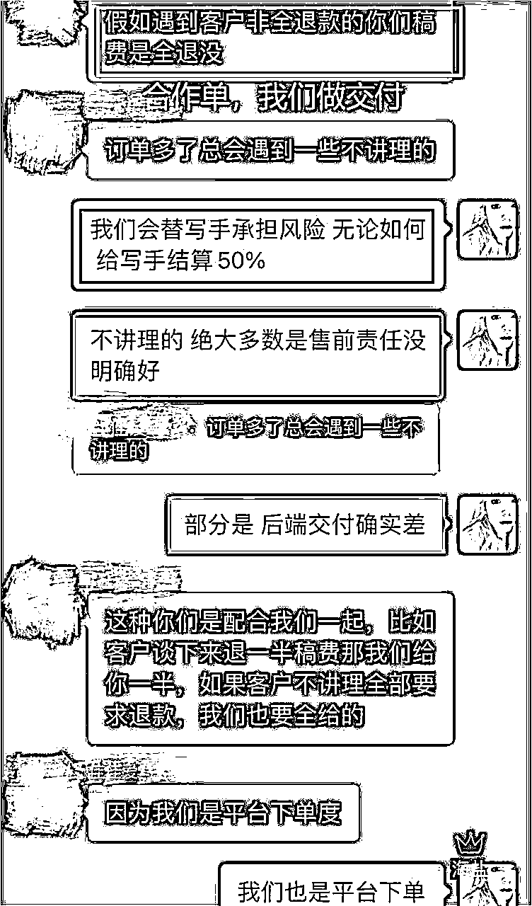

来源：https://atbs4xk1uw.feishu.cn/docx/WtbIdsHSJozucPxaUsic3nEWnCc
先上目录，一览全局
打开左侧目录，配合阅读，思路更清晰
【海盐】
网安风控领域，6年大数据技术，第一批ChatGPT玩家
生财第2年圈友
79年 INFP
盖洛普前5：统率 | 个别 | 学习 | 专注 | 竞争
大学不上课，靠各种比赛拿奖换学分毕业...(自己卷还不够，带着班长和3个室友一起卷，拿下了大学生全国两岸三地商业策划案二等奖，一等奖导师有自己茶叶庄园，三等奖是清华团队...)
加班卷到2000人公司副总裁让我注意他的身体...(老大曾立志要陪到最后一个兄弟下班...我写代码，他撸猫...)
【首发即精华】一文讲透ChatGPT光速无脑生产高质量读后感的三种玩法
【第1份星球作业贴排行榜第1】如果你的游戏友，每天晚上喊的是来生财有术开黑了？
非常非常非常感谢生财圈友刀姐@黄小刀、盖哥@Sky、置顶吉祥物亦仁哥@亦仁，给海盐的指导、方向、资源
非常非常非常感谢生财圈友@掩体、@纯洁的微信（微笑哥）、@不会笑青年（波哥）的经验分享，让海盐少踩了很多坑，现在也是很好的伙伴~
还有圈友超可爱的鹅@小鹅、超慢的慢慢@李慢慢，在海盐开写作训练营后，提供了很多真诚的帮助与资源~
感谢生财平台，感谢亦仁哥的魔法王国！直接画地为牢，香的走不动了...
明明很年轻，大家不要再叫亦仁大大了（手动狗头）
从0到1没有捷径，如果有，就是向拿到结果的人学习，提前预判，少走弯路
故事的开始 来，先吃个瓜
第1集
第2集
第3集
第4集
据不完全统计，身为流量小白、创业小白的海盐，从开始准备做文案写作项目的第一天起，单兵作战，运营闲鱼3个号，战绩如下：
运营第一个月（2023.9.13~2023.10.13）
1.5w+净利润，流水23745，每笔可查（19195入账 + 4650本月未结）
温馨提示：
不要用这个数据计算利润率，净利润中有写作单、合作单，是100%利润
运营第二个月（2023.10.14~2023.11.13）
3.6w+净利润，流水45443，每笔可查（35700入账 + 9743尾款本月未结）
温馨提示：同理，不要用这个数据计算利润率
闲鱼运营的怎么样，看见没见过闲鱼向你收取服务费就知道了
好想点拒绝...
海盐的一个咸鱼
海盐的一个微信
海盐的一个支付宝
截至目前，海盐的老客户复购率数据：最高11单/人，共3人的复购率≥10单
截至目前，海盐的老客户推荐率数据：最高成功推荐14位客户下单/人
第1周（9.13~9.20）在起号准备阶段，第一个月实际上是后3周（9.21~10.13）产生的本月利润
平均，单兵作战，开局连续2个月，净利润2.5w+/月
只要姿势标准，净利润2.5w+/月，普通人一定能做到
看到这里你可能会问，海盐，你为什么只有2个月的数据，11.13号之后，你干啥去了？
11.13号之后，海盐只接老客户的单、老客户推荐客户的单，和运营停掉但送到嘴边的高单价单子
做过闲鱼的都知道，擦亮都不敢点，是怕有曝光，怕有咨询，怕看到单子忍不住想接....这是真的停止外部运营了......
运营连续2个月持续增长，客户会多的忙不过来，对于创业小白的海盐来说，这个项目太有的搞了
接盘侠就是我，我就是接盘侠！
整个交付强依赖海盐，靠项目本身赚钱，想继续扩大遇到瓶颈，一个人能写的单量是有限的
短时间内，单兵作战，想流量交付两头抓，是不可能的事情
每一个单兵作战，想放大写作项目的人，一定都会遇到海盐的问题
跑通一个项目后，可以主要靠培训赚钱，也可以靠放大项目本身赚钱
二选一，海盐选择了后者
专攻写手交付端，坐实项目基本盘！为了长期发展，精力有限，只能短期战略性停掉运营，眼看着白花花的流量从身边路过...
从23年12月到24年4月，这5个月，海盐主线就在做一件事：自己当写手接单，经验总结成教程
当写手接单子，见更多的单子，见更多的套路，大量实战总结出高效高质量满足大多数客户需求单子的写法经验，再复盘经验、反复测试、写成教程......
今年2月9号，大年三十当天，海盐选择一个人留在北京，写教程
写着写着天就亮了，新年快乐，撒花*★,°*:.☆(￣▽￣)/$:*.°★* 过程真的挺苦逼的...
脑子里有太多东西想写下来，想传下去，教出更多高质量写手，下一阶段，再从高质量写手中培养出优秀客服，再从客服中培养大量优秀的流量操盘手，想让我身边的朋友们在这个很难升职涨薪大批量裁员的时期一起靠自己的能力直接变现，还能一起合作，一起互通有无
一个底层的逻辑是，普通人打工付出了100份努力，产生的价值大头都贡献给公司了，个人只能拿到较少的变现，因为有太多的人在分钱了，同时要养着很多无产出的人
在职场中畅通无阻，前提必须是公司处于朝阳赛道，眼看着是在赚钱的，走上坡路的，那就值得融入进去，十倍努力，持续成长。还需要一个臭味相投的领导，抱着大腿好好干。持续为公司赚钱，共同成长，升职加薪
但大多数人是不容易凑齐这些条件的，缺少哪一个条件，都会造成很大的晋升障碍
当有一天，行业下行，大环境下行，或回报匹配不上你的野心时，才发现离开了公司的平台，自己会的技能和已有的资源毫无直接变现能力，根本无法完成商业闭环
一个人可以脱离公司，用自然流快速变现，直接形成商业闭环，才是这个时代的硬道理
话说回来，可当大量的实战经验缠绕在一起，我面对一个小白，真不知如何下笔，从哪里开始教起......不是每个人都是海盐，海盐的很多朋友没用过AI，或者很浅显的用过，他们自己都说自己用AI写的东西确实在制造网络垃圾......
短时间内让小白炼成高效高质量写手，这教程到底要怎么写？烟灰缸逐渐丰满......
终于！春节后，第一版高质量写手教程，我肝出来了！喝了几瓶烟灰，新年真的快乐了
内部测试效果
可行性拉满，小白从0-1全网最牛写作变现教程！耗时5个月研发
2024-04-29~2024-05-05，一周时间，采取初审测试和淘汰机制，收了45名付费学员，目的是培养+选拔出无敌抗打的后端交付团队
项目基本盘 叠加 写作端培训，直接实现月7w+盈利，10wGMV
今年目标：持续放大交付端，深耕项目基本盘，培训3000名高质量写手，做到业内交付端Top1
先留个悬念，片末放~
我们先来一文讲透小白入局写作变现项目从0到10的可行性路径（含有效动作）
让你站在上帝视角，了解项目全貌
最后，再奉上海盐自己的未来布局（在片尾，不急），毫无保留，海盐一向打明牌
来吧，路演正式开始
一个可以几乎0成本、高单价、高利润、高转化率、高复购率、高转介绍率、高壁垒、且能快速变现的项目
还可以时间自由、地点自由、线上办公、数字游民......
没错儿，
小白非常好上手，可以用最短路径快速变现，拿到正反馈
后期建立壁垒，无限可能
这是一个几乎挑不出来一点儿缺点的项目
=>
项目：写作变现，即，帮客户写文字直接赚稿费
市场上有人需要写各种文字内容，但是自己不会写，或者懒得写，想付费找人写，我们来帮他写，一买一卖，交易就形成了
AI赋能传统文案写作行业
AI只是提效工具，写作变现项目的核心永远是写手的写作能力
留学生zuoye、英文万字文章、英文毕业万字文章
学生zuoye、课程万字文章、毕业万字文章、bs
期刊发表
公文、职场文（高单价，很简单的PPT几千）
自媒体文案、测评文
标书、数据分析（高单价）
商业策划案、PPT、代码、平面设计等...（高单价，朋友做的PPT 1200一页）
一切需要文字的内容，都可以进行写作服务
流量经验陪跑（顺便筛选培养出的优秀操盘手合作）
高质量写作训练营（顺便筛选培养出的高质量写手合作）
通过培训业务，流量端+写手端可持续培训新人反哺项目基本盘，双边平衡，哪端缺人动态调节培训频率及人次
也可以，将培训作为基本盘赚钱，项目用来辅助。只是侧重的发力点不同。（海盐没选这条路）
闲鱼（新人友好）
小红书（客源优质）
淘宝（传统同行，量超级大。重点：前期去应聘写手直接变现）
拼多多（单价低，量大）
Boss直聘（二甲方多）
抖音、视频号、CSDN、B站、Q群（都有直接客户，数据暂未调研）
线下合作、朋友介绍
后端交付做好，老客户非常香（目前海盐的最高纪录老客户成功推荐率14单/人，复购率11单/人）
学生、职场的小单子，几十、几百居多，部分专项内容几千
策划案、PPT、代码、平面设计、万字文章能上千，高端宣发、策划案、PPT上万（TOB，这里是可摸索的高单价，海盐有后端交付能力，傲驰集团内容发展经理带队，但暂无精力拓展甲方渠道...如果甲方爸爸看见此贴，欢迎来撩~ 哭哭T_T）
硕万字文章、留学生万字文章，能上万
报纸杂志、期刊发表、课题项目，几百、几千、几万、十几万、几十万（刚开始摸，朋友公司在做）
培训做起来，几千，几万
基本盘做好后，打个人IP，行业的最后一站，无限可能
据海盐不完全统计
淘宝C店写作店铺约2000家
| 序号 | C店单品最高销量（单/年） | 店铺数量（个） |
|---|---|---|
| 1 | 1w+ | 1 |
| 2 | 1000+ | 100 |
| 3 | 300~900 | 200 |
| 4 | 100 | 800 |
| 5 | <100 | 900 |
数据来源：淘宝店铺宝贝销售数据，显示数据为近365天的销量
由于淘宝存在shua单数据，我们去掉极端值（序号1和序号5），粗略估算C店市场总份额 ≈ 店铺总数量 * 每个店铺保守估算平均营业额 = 有效店铺总数量1100个 * 单品最高销量中位数600单 * 保守假设每单营业额200元 * 保守假设每个店铺有效宝贝个数2个 = C店市场总份额2.64亿/年
天猫写作店铺约400家
| 序号 | 天猫店单品最高销量（单/年） | 店铺数量（个） |
|---|---|---|
| 1 | 1w~10w | 100 |
| 2 | 1000~9000 | 250 |
| 5 | <100 | 50 |
数据来源：天猫店铺宝贝销售数据，显示数据为近365天的销量
由于淘宝存在shua单数据，去掉极端值（序号1和序号5），粗略估算天猫店市场总份额 ≈ 店铺总数量 * 每个店铺保守估算平均营业额 = 有效店铺总数量250个 * 单品最高销量中位数6000单 * 保守假设每单营业额500元 * 保守假设每个店铺有效宝贝个数2个 = 天猫店市场总份额15亿/年
淘宝平台（C店+天猫店）的市场总份额 ≈ 17.64亿/年
据海盐去淘宝应聘调（wo）研（di），写手拿每单交易额的20%（特殊情况写手主导价格，拿大头）、客服拿10%、保守估算50%的利润是店铺运营者 => 淘宝平台的总净利润额 ≈ 17.64亿 * 0.5 = 8.8亿
感谢掩体提供卧底思路，掩体应该是我身边最早去淘宝应聘写手的
这里还没算闲鱼、小红书、QQ群、贴吧、Boss、线下的市场份额...
海盐调研了几十家C店+天猫的每日单量，从这个维度，可以计算一个写作公司的年利润额，以其中有普遍代表性的14家为例
| 店铺 | 平均每天群内放单量（单/天） | 预计日总单量（单/天) |
|---|---|---|
| 1 | 8 | 12 |
| 2 | 10 | 15 |
| 3 | 10 | 15 |
| 4 | 30 | 45 |
| 5 | 40 | 60 |
| 6 | 50 | 75 |
| 7 | 50 | 75 |
| 8 | 90 | 135 |
| 9 | 300 | 450 |
| 10 | 400 | 600 |
| 11 | 400 | 600 |
| 12 | 400 | 600 |
| 13 | 600 | 900 |
| 14 | 800 | 1200 |
数据来源：14个C店+淘宝店铺的写手接单群
取中间值，单店铺日总单量500单，保守估算平均单价200元，则 =>
单店铺日营业额 ≈ 500单 * 200元 = 10w
单店铺年营业额 ≈ 10w * 保守估算去掉淡季的有效日240天 = 2400w
单店铺年利润额 ≈ 2400w * 保守估算50%利润率 = 1200w
说明一下，实际上可能存在多个淘宝店给同一个后端（同一个公司）引流的情况，但我们这里就是从后端实际营业者的视角，来估算的单个“公司”拿到的实际市场盘子，没毛病
如果这个公司，同时多平台运营呢？...
| 序号 | 年份 | 全国高考报名人数（人） |
|---|---|---|
| 1 | 2023 | 1291w |
| 2 | 2022 | 1193w |
| 3 | 2021 | 1978w |
数据来源：中国zhengfu网、新闻中心、教育部
每年高考报名人数约1000w，每年有1000w*4年 = 4000w在校大学生
保守估算每个班级40名学生，其中有1个多金并不会写文案的学生需要写大学的各种文案 => 每年100w人需要写作，则 =>
每年国内大学生市场总份额 ≈ 100w人 * 保守估算每人每年需求价值1000元 = 10亿
每年国内大学生市场总利润额 ≈ 10亿 * 保守估算0.5 = 5亿
| 序号 | 年份 | 出国留学生人数（人） |
|---|---|---|
| 1 | 2023 | 105.7w（赴美） |
| 2 | 2022 | 66.21w |
| 3 | 2021 | 52.37w |
| 4 | 2020 | 45.09w |
| 5 | 2019 | 70.35w |
每年出国留学生约50w，其中本科生约15w，每年有15w*3年 = 45w在校大学生
保守估算每个班级15名学生，其中有1个多金并不会写文案的学生需要写大学的各种文案 => 每年3w人需要写作，则 =>
每年国外大学生市场总份额 ≈ 3w人 * 保守估算每人每年需求价值4000元 = 1.2亿
每年国外大学生市场总利润额 ≈ 1.2亿 * 保守估算0.5 = 6000w
=>
保守结论：
每年中国（国内+留学生）大学生市场总份额 ≈ 11.2亿
每年中国（国内+留学生）大学生市场总利润额 ≈ 5.6亿
这还没算单价高的硕、其他年级学生、职场需求、ToB需求...
一张图，带你看透整个写作项目
一切对本项目的剖析，本质都来源于这张泳道图
小白从0到1的有效路径：
跑通最小MVP（写手+客服+流量），一个人就是一个团队
后端交付是写作项目安身立命之本，整个流程中，最致命的环节是【后端交付】
如果写作质量差：
=> 后端交付跟不上，流量越好，售前越牛，单子越多，亏损越大，损耗精力与情绪越多，整体有效动作越少，单位时间内赚钱越少
反之，只要写的好，自然心里有底，自然知道售前、售后怎么和客户聊，顶多缺少一点提效的客服话术和高效转化经验（在第二阶段再专项提升客服话术），对于流量端（在第三阶段再掌握），在第一阶段不需要做运营，直接去接淘宝外包单直接“获客”，完成变现的最小闭环
业内最大认知误区：
× 几乎所有人都认为写手是帕鲁，写手是低价劳动力
整个项目，不管是以写作业务为基本盘，还是以培训业务为基本盘，实际上都需要让写手赚到钱，整个商业逻辑才成立，才长治久安
【加餐】
至此，你一个人，就是一个团队了，从流量到后端交付，全盘搞定写作项目！
有了从0-1对全局的了解和掌握后，非常容易找到适合自己的高上限高壁垒高单价的品类
锁死高客单价高上限的品类
用同样的动作赚更多的钱
比如
海盐是大数据技术，会写作后，结合自身专业，发现市场上程序毕业she计是高单价品，我就可以做
海盐的朋友是财务，会写作后，结合自身专业，发现市场上财务相关的毕业万字文章是高单价品，他就可以做
比如
海盐身边有海归、高管、985硕博，字节产品经理，11年资深宣发主编，大家一起合作，可以搞定很多高单价的品类，一起分钱
每人/月的利润额 至少2倍增长
提升高单价品的写作能力后，售前售后能力随之提升，而流量你会发现，只会多的接不住...
单兵作战的利润拉满，才具备可复制放大属性
此刻，你已成为超级个体，具备了无限复制属性
十倍放大，就是把1做10遍
底层逻辑，一个公式就说完了：2000利润/人月 *10倍放大 = 2w、对比 2w利润/人月 *10倍放大 = 20w
2w VS 20w
从0到1，先把单兵作战做牢做实，单人能力越强，每人/月变现越高，10倍复制巨可观
细颗粒度拆解单兵路径，账号*10、叠加多平台运营、招人、合作
单兵*10 => 10倍增长 - 运营成本
制定规则、优化话术、优化环节、优化人
单兵收益再次 *2，治大国如烹小鲜，必可达2倍增长
注意区分：
前边小白单兵作战的2倍增长，重点是优化写作交付环节，锁死高单价
这里的2倍增长，是优化全流程环节，发力细节提效
单兵利润 *10倍增长 *2倍增长 = 20倍增长
20倍增长 - 运营成本 = 必可达10倍增长
通过垂直泳道图进行流程分析可知，每个【关键动作】的不到位，都能让【转化率=成单率 | 返修率 | 退单率 | 复购率 | 推荐率】有所损耗
例如，咨询100单仅最终收货50单，对比 咨询100单收货98单
只有你开了个工作室，招了一批低价的帕鲁在做客服和写手，像淘宝同行的玩法，靠量取胜，售前售后大比例的退单倾向和扯皮沟通这种费力不赚钱的活都让帕鲁去做，你只坐享成单的提成，才能承受的住效率损耗，即大量因为质量沟通扯皮的人工成本，也就是业内惯用的重流量轻后端玩法
如果是单兵作战，只能选择重后端（含客服）轻流量，后续再用流量扩大事半功倍的玩法，唯一的有效动作只有击穿大后端，搞定高质量写手团队（客服从写手提拔），即用最少的动作赚钱。除非你只想赚个烟灰缸的钱，那随意
放个瓜，吃么？
《论写手质量在写作项目中的多米诺骨牌效应》
第1集
第2集
第3集
第4集
第5集
第6集
能流程化的不动脑：扎实的有效动作统一训练，强化为潜意识的思维方式和肌肉记忆
能规则化的不沟通：制定统一规则，默认遵守，只沟通例外，用例外反哺迭代规则
（1）运营手法直接影响成单率：运营手法影响浏览转咨询率
（2）yin流手法直接影响成单率：yin流手法影响站外yin流成功率
（3）yin流手法直接影响退单率：yin流手法影响举报成功率
【提效放大】：流量动作越标准，单账号单月转化率越高
（1）售前直接影响成交率：话术=专业度+人性把握+报价性价比（不懂的方向，借助专项写手配合促成）
（2）售前直接影响退单率：随意承诺，责任边界不清楚，需求一旦有坑，极大概率增加退单率
【提效放大】：售前动作越标准，客服和写手的耦合度越低，售前单人单月转化率越高
（1）售后间接影响返修率：售后可巧妙挡住不合理需求
（2）售后间接影响退单率：话术=专业度+人性把握
（3）售后间接影响复购率：话术=专业度+人性把握
（4）售后间接影响推荐率：话术=专业度+人性把握
【提效放大】：售后动作越标准，每单沟通耗时越少，售后单人单月效率越高
（1）后端能力栈间接影响转化率：适用于售前需要后端配合的咨询单
（2）质量直接决定返修率：写作实力+经验
（3）质量直接决定退单率：写作实力+经验
（4）质量直接决定复购率：写作实力+经验
（5）质量直接决定推荐率：写作实力+经验
【提效放大】：写手动作越标准，每单写作耗时越少，写手单人单月转化率越高
可达到目标：流量端无脑匹配售前（底层逻辑：能流程化的不动脑）
可达到目标：售前无脑匹配写手（底层逻辑：能流程化的不动脑）
从泳道图可看出，后端交付是能影响5大转化率的核心环节，是项目的根本
以后端交付为地基的飞轮，才能带动十倍增长
地基不牢，流量再大也吃不下
地基不牢，售前再牛也接不住
地基不牢，事倍功半
可达到目标：客服统一训练内容，只做部分经验性话术培训即可。客服有写手经验，十分了解“自家产品”，售前售后转化率天然高
可达到目标：后端交付牛了，全线转化率（成单率 | 返修率 | 退单率 | 复购率 | 推荐率）飙升。这是性价比最高的动作，是必打牢的地基！续写手池的过程中，写手可通过大量外部合作单先变现，盘活写手自闭环，等待后续动作。
可达到目标：优化单兵作战流程（提价+提效），单兵收益 *2，做到单兵的2倍增长
可达到目标：根基巨稳固，借助飞轮效应，用流量做到十倍增长
此时衍生的培训业务，内容超硬核，技术实力是对同行的降维打击，永远比人快一步，成为业内被追（chao）赶（xi）对象

为了思路顺滑，先回顾一下小白起步的路径
至此，你一个人，就是一个团队了，从流量到后端交付，全盘搞定写作项目！
海盐第一个月，一个人就是一个团队，1.5w净利润
此刻，你已成为超级个体，具备了无限复制属性
第二个月，海盐2倍放大达成，净利润3.6w
基于从2-10的有效路径：1.只需复制1的打法*10、2.发力全流程的细节提效，进行推导
=>
可达到目标：建立后端交付核心壁垒，沉淀高质量写手团队
目前海盐在此阶段
一篇复盘贴，让海盐有了40+文化、价值高度认同的战友~
双向选择，希望今后我们可以把后背交付给对方，一起走十年！
海盐选择毫无保留，先迈出第一步（手动笔芯）
终于，我有了你们，于是，有了我们
可达到目标：从高质量写手中选拔，培训优秀客服，沉淀一支抗打的客服团队，完成后端闭环
可达到目标：命运之飞轮疯狂转动，10倍增长闭环
流量操盘手是单独一套体系，不需要从写手中选拔
可达到目标：扩大两块培训业务，反哺基本盘
流量端培训+写手端培训（客服是plus级别的写手）
持续培训新人，培养筛选出优秀操盘手反哺项目基本盘
双边平衡，哪端缺人动态调配对应的培训频率及人次
可达到目标：轻团队运营，重线上合作（筛选自学员），无限放大
来，最后吃个瓜

第1集
第2集
第3集
番外1
番外2
番外3
番外4
行业的最后一站，IP私域是终局，无限可能
好啦~故事讲完了，这也是海盐对文案写作项目的所有复盘和规划
最后，放个福利彩蛋，揭秘本贴开头的悬念【海盐的未来布局】，在这也毫无保留的分享给大家
我们下期再见叭
From Cheese海盐芝士
2024.05.07 04:16 北京
哇，谢谢你的喜欢，耐心看到这里。恭喜你发现了一个宝藏博主~
Cheese海盐芝士
AI狂热玩家，6年大数据技术
内容矩阵：AI实战教程 | AI情报快讯 | 提效工具库
希望海盐的分享，可以让普通人在AIGC时代，不再旁观，动手实操无卡点~